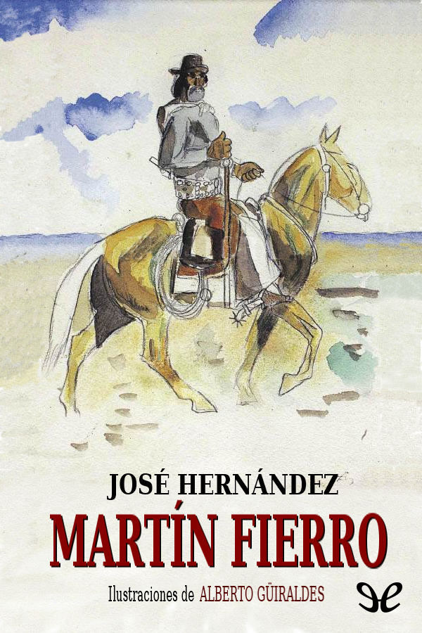
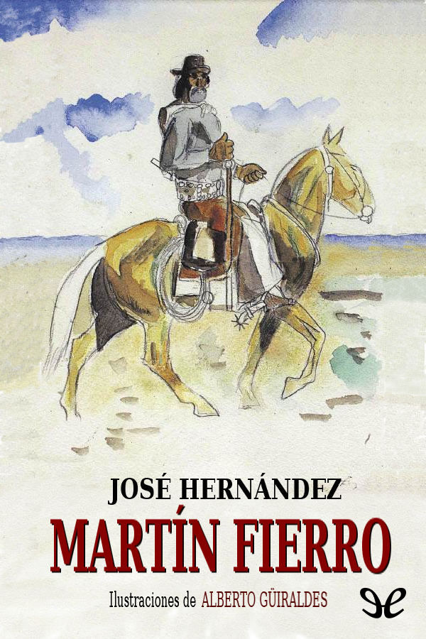

Martín Fierro
Autor: José Hernández
Clásico de la literatura gauchesca que narra la vida de un hombre marginado por la sociedad. Un canto a la libertad y la injusticia.
📥 Descargar EPUBAutor: José Hernández
Clásico de la literatura gauchesca que narra la vida de un hombre marginado por la sociedad. Un canto a la libertad y la injusticia.
📥 Descargar EPUB